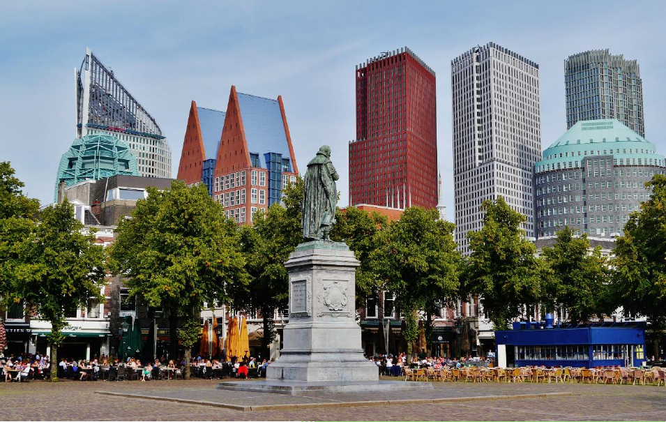

Green areas
Combined municipal green space, major green corridors and coastal dune datasets into a citywide overview.
An ArcGIS Pro study examining how green areas are distributed across the city, how neighbourhood coverage varies, and how those patterns relate to population density.

Using open data from CBS, PDOK and the Municipality of The Hague, I prepared spatial layers and created thematic maps in ArcGIS Pro. The report compares green cover and population density at neighbourhood scale, and looks at the amount of green space available per resident.
Combined municipal green space, major green corridors and coastal dune datasets into a citywide overview.
Calculated the share of each neighbourhood covered by mapped green surfaces and classified results using Natural Breaks.
Mapped inhabitants per square kilometre using official neighbourhood statistics, excluding suppressed values.
Used green space per inhabitant, a bivariate map and a scatter plot to examine how the spatial patterns relate.
Scroll through the original maps, data processing, methodology, visualizations, findings and references directly below. You can also open the report separately for a larger reading view.
Key finding. The report found that neighbourhoods with higher population densities tended to have less mapped green coverage. The linear trend had an R² of 0.28, indicating that population density alone does not account for most differences in coverage.